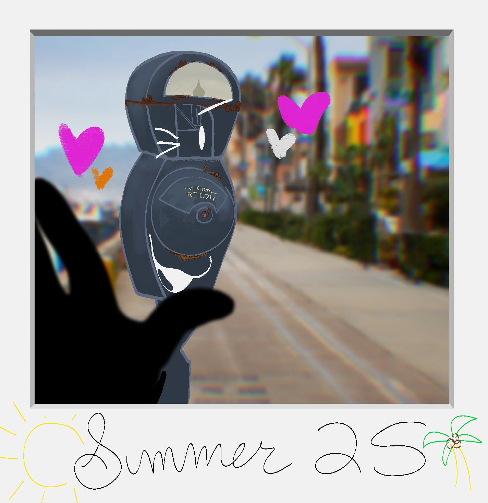

The Inbetween Times Special Edition Fall 19 ------------------------------------------------------------ REMEMBERING PARKER By the Editorial Staff In the weeks since Summer 28, one name has come up again and again in resident accounts of that night: Parker, a parking meter, last seen pulling others clear of the crowd before the shoreline rift closed behind her too. Few residents knew her personally. By most accounts, she kept to herself. Multiple witnesses have independently described the same handful of moments — someone small pushing them toward the street, then going back for the next person, and the next, until she didn't come back at all. ------------------------------------------------------------ A FRIEND REMEMBERS Snaps, a camera and one of the few residents who knew Parker well, agreed to speak with us this week. He struggled to finish most of his sentences. “She — I used to give her the prints that didn't turn out. The blurry ones, the double exposures, whatever got cut wrong. She'd cut them up and make these little collages out of the scraps. I don't even know when she started doing that. I never told anyone, I don't think she wanted people to know. That's — sorry. Sorry. I keep doing that. I have a whole roll of film still in me from that night. I haven't — I can't. I keep almost developing it and then I just. I don't. It's fine, though! It's — no, it's not fine, I don't know why I said that, it's not fine, I don't think anything is ever going to be fine again and I hate that I just tried to make that sound okay, I do that, I don't even mean to, I just — I keep waiting for her to show back up. I know she's not going to. I know that. I'm not stupid, I know that. I just keep waiting anyway.” ------------------------------------------------------------ Printed by the Daisy Collective Library of All Pages